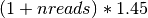
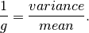

The GPI IFS detector is a Teledyne HAWAII-2RG, with 2048x2048 logical pixels (2040x2040 of which are photosensitive, the outer 4 pixels being non-light-sensitive reference pixels).
The detector may be read out using Correlated Double Sampline (CDS), Multiple CDS (MCDS, a.k.a. Fowler sampling), or up-the-ramp (UTR) modes. UTR is the standard mode and should almost always be used.
Read noise is about 11 e- per CDS read. This decreases with higher numbers of reads, down to a limit set by 1/f noise. A read noise of about 2 e- is achieved for 88 reads (130 s integration time), based on test data taken in early Feb 2013.
Pixels are clocked out at 100 kHz in 32 channels. This leads to a readout time of 1.45479 s per full frame readout. All exposure times are quantized to be multiples of this, so the possible exposure times are 1.45 s, 2.91 s, 4.35 s, and so on. The detector control software automatically rounds any requested exposure time down to the next closest allowed value, so you can simply request e.g. 5 s exposure and the system will take a 4.35 s exposure. Both the requested and actual exposure times are saved to the FITS header.
Overhead from resetting the array before an exposure is 1 readout time, plus 1 readout time for the initial read of a CDS or UTR sequence, for a total overhead of 2 readout times (~3 s) for a CDS or UTR exposure. For an MCDS exposure, the initial overhead is nreads readout times, for a total overhead of  s.
These are the minimum possible overheads due to the readout scheme; in practice, instrument commanding imposes additional delays so the effective overheads are several times larger than this for commanding individual exposures. However, coadding together multiple integrations can be done efficiently, with just this minimum inherent overhead per exposure.
In output files, the detector’s fast readout direction is presented as the X axis, and the slow readout direction as the Y axis. The 32 readout channels are parallel regions each 64x2048 pixels in size.
The hardware supports subarray readouts, which could allow for shorter minimum read times for sufficiently small subarray sizes, but this capability has not yet been commissioned.
The gain is nominally 3.04 e- per DN, based on the settings of the output amplifiers. Prior to August 2, 2012, the gain was nominally 2.15 e- per DN. This is recorded as the “SYSGAIN” extension header keyword.
While the gain has not yet been independently measured for the GPI detector, such a measurement has been done for the twin of this readout system on the Keck instrument MOSFIRE. Kristen Kulas found using the photon transfer method an empirical gain of 2.14 e-/ADU, essentially identical to the nominal value of 2.15 based on the amplifier settings. So it seems reasonable to suppose that the gain of the GPI detector really is close to the nominal gain, until and unless we have any measurement otherwise.
Note
the above is out of date and needs to be updated
An rough estimate of the gain can be computed using the formula

This is true in a uniformly enlightened detector image (This is never the case in GPI). The proper way to deal with that is to acquire many images for several integration times (enough images to be able to compute a mean and a variance for each pixel for each integration time). The slope of the curve -variance function of the different means (the mean increasing with the integration time)- gives an estimate of the gain of the pixel. One could then compute a gain value for every single pixel.
Another solution to get a detector gain in the ballpark using flat fields is to add the pixels in the perpendicular direction of the spectral dispersion. All the microlens spectra or identical. Therefore, the intensity received by these pixels together for a given wavelength will be the same in each spectrum. It actually means computing a mean and a variance in each slice in a raw data cube (using the 3 pixels wide box integration and before wavelength interpolation) even if the the wavelength is not exactly constant in a single slice of a raw cube.

One could be tempted to do that in a reduced data cube but it will not work. The reduction process for a data cube includes interpolations in order to create a regular wavelength vector. An interpolation doesn’t preserve the ratio variance/mean and this is the reason why a gain cannot be computed in a reduced data cube. Adding the 3 pixels in the previous method is fine because it preserve the ratio.
Note
We can assume that a slice represents a wavelength and we suppose that the light source intensity does not depend of the wavelength. Therefore, the mean and the variance of both slices are identical.
So instead of having Var(S)/<S> = 1/g you get Var(S)/<S> = (a^2+b^2)/(a+b)*1/g

Note
The gain was once tried to be computed on a reduced data cube and the result was indeed different. In order to verify if the interpolation was the cause of the difference, we compared the result of the ratio (from the reduced cube) to the value of (a^2+b^2)/(a+b)*1/g. With, g computed from the raw cube and the interpolation coefficients approximated in the ballpark. It appeared that the two were really close (~10% ish) which support the previous analysis.
Document here from Raphael’s study
To be documented.
About 99.5% of the pixels on the detector are operable. The non-operable pixels include about 15,000 hot pixels and 2500 cold pixels that are measured and masked out by the data pipeline.
That does not include the 4-pixel wide rim of reference pixels around the outer edge of the detector. Those make up 0.78% of the total pixels of the H2RG but are non-photosensitive by design.